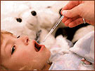

При лихорадке неясной этиологии у детей младше 3 лет имеется небольшой, но клинически значимый риск развития сепсиса и менингита. Данный обзор посвящён описанию бактериальных причин лихорадки и подходам к ведению пациентов такого рода.

Лихорадка - повышение температуры тела в результате неспецифической защитно-приспособительной реакции организма, характеризующаяся перестройкой процессов терморегуляции и возникающей в ответ на воздействие патогенных раздражителей.
Повышение температуры тела у детей является одним из наиболее частых поводов обращения за медицинской помощью в педиатрической практике.
Лихорадкой у детей грудного возраста принято считать состояние, при котором ректальная температура превышает 38°С. У детей старшего возраста лихорадкой считается состояние, при котором при ректальном изменении температура выше 38,4°C и при измерении в ротовой полости - выше 37,8°С.
Большинство детей с лихорадкой при отсутствии очага инфекции не нуждаются в медикаментозной терапии, так как причиной лихорадочного состояния является вирусная инфекция. Другая, не менее частая причина лихорадки - инфекции мочевыводящих путей, при которых очаг инфекции также не определяется. Тем не менее, у некоторых детей лихорадочное состояние является результатом скрытой бактериемии, которая может привести к серьёзным инфекционным осложнениям. Особенно важно отметить, что при возникновении лихорадки неясного генеза у детей в возрасте до 3 лет имеется небольшой, но клинически значимый риск возникновения сепсиса и менингита.
Группа исследователей из Department of Pediatrics, Georgetown University School of Medicine (Вашингтон, США) проанализировали имеющиеся данные по этой проблеме. Поиск информации осуществлялся в медицинской базе данных Medline и медицинских архивах, имевшихся у самих исследователей. Целью проведённого анализа было определение стратегии выявления детей с лихорадкой неясного генеза и выбор тактики их лечения.
Результаты проведенного анализа показали, что наиболее частыми возбудителями бактериальных инфекционных заболеваний у детей в возрасте до 1 месяца являются следующие микроорганизмы:
- Стрептококк группы В
- Escherichia coli (а также другие грамотрицательные энтеробактерии)
- Listeria monocytogenes
- Streptococcus pneumoniae
- Haemophilus influenzae
- Staphylococcus aureus
- Neisseria meningitides
- Salmonella spp.
Исследователи отмечали значительную роль вирусов (Herpes simplex и энтеровирусы) в развитии лихорадочного состояния у детей этого возраста.
Было установлено, что в возрастной группе детей старше 3 месяцев наиболее частыми возбудителями инфекционного процесса являются S.pneumoniae (у непривитых детей), N.meningitides, Salmonella spp.
Все лихорадящие дети младше 3 месяцев, у которых начальные проявления лихорадки сопровождались токсической реакцией, должны быть госпитализированы в стационар, где им будет проведено полное обследование для исключения сепсиса или менингита, и таким пациентам должна быть назначена антимикробная терапия.
Риск бактериальной инфекции очень низок у детей старше 24 месяцев с лихорадкой, если они удовлетворительно себя чувствуют. В данном случае рекомендуется только наблюдение за ребёнком без проведения каких-либо лабораторных обследований и без назначения антибактериальной терапии.
В возрасте 3-24 месяцев антибактериальная терапия назначается в том случае, если обнаружен очаг (или очаги) инфекции; если же нет очага инфекции, и ребёнок чувствует себя удовлетворительно, обычно не требуется ни проведения лабораторных обследований, ни назначения антибиотиков.
Большинство лихорадящих детей до 1 месяца и все дети в возрасте до 7 дней должны быть госпитализированы в стационар и им рекомендуется назначение антибактериальной терапии; однако возможно придерживаться выжидательной тактики без назначения антибиотиков (в стационаре или в амбулаторных условиях, если пациент относится к группе низкого риска).
Наибольший риск развития бактериальных инфекций наблюдается в первые месяцы жизни ребёнка, и он особенно высок у недоношенных новорожденных.
В многочисленных исследованиях были установлены факторы низкого риска развития серьезных инфекционных процессов.
Клинические и лабораторные показатели, отражающие низкий риск развития инфекционных осложнений у детей в возрасте до 3 месяцев, при условии наличия лихорадки и отсутствия инфекционного очага
Клинические критерии:
- Срочные роды (гестационный возраст ≥37 недель)
- Ранее здоровые новорожденные
- Отсутствие токсических проявлений при лихорадке
- Отсутствие очага бактериальной инфекции (исключение: средний отит)
Лабораторные критерии:
- Количество лейкоцитов в пределах 5-15x109/л, палочкоядерных лейкоцитов 1,5x109/л и соотношение палочки/нейтрофилы <2
- Нормальный анализ мочи (отсутствие бактерий при микроскопии окрашенного по Граму мазка, количество лейкоцитов не более 5 в поле зрения)
- Если имеет место диарея, отсутствие в каловых массах гема; при микроскопии - не более 5 лейкоцитов в поле зрения
- Менее 8x106 лейкоцитов/л в цереброспинальной жидкости, если проведена люмбальная пункция, и отсутствие бактерий при микроскопии окрашенного по Граму мазка
- Отсутствие инфильтрации на рентгенограмме лёгких
Тактика ведения детей с лихорадкой неясного генеза
Все лихорадящие дети в возрасте до 3 лет, у которых начальные проявления лихорадки сопровождались токсической реакцией, должны быть госпитализированы в стационар, где им будет проведено полное обследование для исключения сепсиса или менингита
Токсическую реакцию можно определить как клиническое проявление септического синдрома, включающее вялость, гиповентиляцию или гипервентиляцию, цианоз. Полное обследование для исключения сепсиса включает:
- Развернутый анализ крови
- Бактериологическое исследование крови
- Анализ мочи и бактериологическое исследование мочи
- Проведение люмбальной пункции с последующим анализом и бактериологическим исследованием цереброспинальной жидкости
- Бактериологическое исследование кала и оценка количества лейкоцитов при диарее
- Рентгенография органов грудной клетки
Варианты тактики ведения лихорадящих детей в возрасте до 3 месяцев, не имеющих явных очагов инфекции, которые чувствуют себя удовлетворительно и имеют низкие факторы риска:
- При условии обеспечения надлежащего ухода - наблюдение и ведение в домашних условиях без проведения лабораторных анализов и госпитализации
- Наблюдение и ведение в домашних условиях, если лабораторные показатели прогнозируют «низкий риск» развития инфекционных осложнений
- Наблюдение в условиях стационара без назначения антимикробной терапии
- Эмпирическая антимикробная терапия в течение двух дней (цефтриаксон 50 мг/кг в/в 1 раз/сутки) до получения результатов бактериологического анализа.
Варианты тактики ведения лихорадящих детей в возрасте старше 3 месяцев, не имеющих явных очагов инфекции:
- Назначение жаропонижающих средств (ацетоминофен 15 мг/кг каждые 4 часа или ибупрофен 10 мг/кг каждые 6 часов)
- Госпитализация при наличии у ребёнка выраженных признаков интоксикации. Проведение в условиях стационара диагностических исследований и бактериологического исследования. Назначение антибиотиков (цефтриаксон 50 мг/кг в/в 1 раз/сутки, цефуроксим 150-200 мг/кг/сут в/в каждые 6-8 часов)
- Если нет выраженных токсических проявлений - проведение исследований на предмет установления очага инфекции:
- Если очаг найден - назначение антибактериальных препаратов, активных в отношении наиболее значимого возбудителя
- Если температура тела <39°C, очаг инфекции не найден, то не требуется проведение диагностических манипуляций и назначение антибиотиков
- Если температура тела >39°C - необходимо проведение анализа мочи и бактериологического исследования мочи. При положительном результате анализа - назначение цефалоспоринов III поколения. Детям, не вакцинированным пневмококковой вакциной, необходимо провести анализ крови (подсчет числа лейкоцитов и лейкоцитарной формулы) и бактериологическое исследование крови. В случае, если количество лейкоцитов >15x109/л, необходимо проведение посева крови и назначение антибиотиков. Проведение рентгенографии органов грудной клетки, если насыщение кислорода <95% или имеет место затрудненное дыхание или локальные хрипы, а количество лейкоцитов >20x109/л.
Несмотря на то, при лихорадке неясной этиологии у детей младше 3 лет имеется небольшой риск развития сепсиса и менингита, всегда необходимо помнить об этих тяжёлых инфекционных заболеваниях.
Исследователи отмечают, что в странах, где проводиться иммунизация против S.pneumonia и H.influenzae, риск развития тяжёлых бактериальных инфекций у маленьких детей существенно снижается, тем не менее, необходимо проявлять максимальную бдительность при каждом случае возникновения подобного состояния.
Itzhak Brook
Unexplained fever in young children: how to manage severe bacterial infection.
BMJ 2003; 327:1094-7